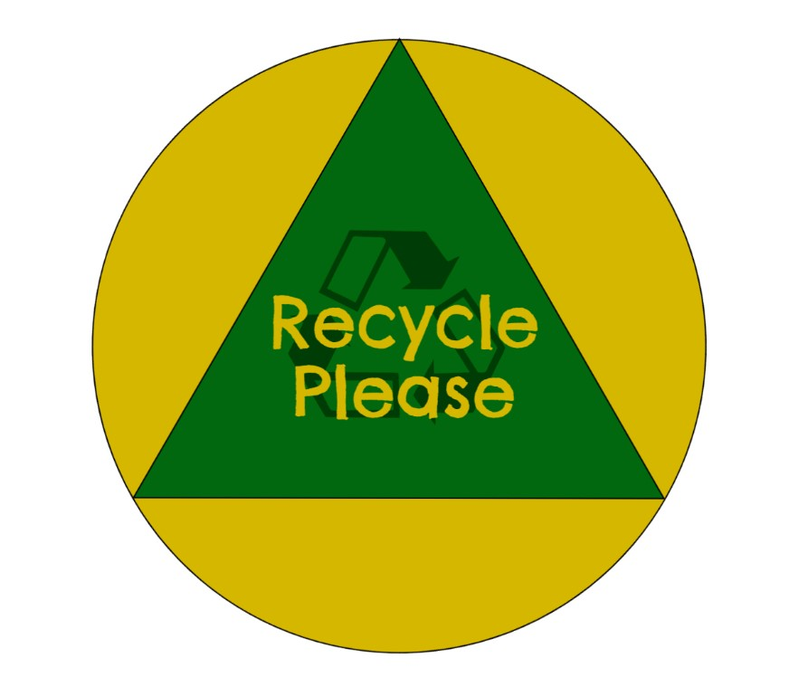

My Projects
|
Bookstore Project
An online bookstore system via NetBeans that allows the owner to create and display an inventory, track membership details, track inventory, and generate a file using Comma Separated Value format. This project was developed with the programming language Java. | |
|  |
Recycle Please
A high-fidelity prototype created using Figma to promote sustainability. This prototype contains a news and posts article, as well as a map where users are shown local resources and conveniently efficient ways of disposing of trash and/or recyclables. The prototype contains the foundation of what I plan to expand on and implement in the future. |
|
Cryptography Cracker
A cryptography cracker that cracks the playfair cypher using python based upon the text entered by the user. |
|
|
Chat Bot
A travel bot that allows for travellers to plan and book their trips. The chat bot can help with various tasks, from finding hotels, booking flights, as well as providing recommendations for things to do at their destination. This project was created usingJavascript, Node.js, as well as React.js |
|
 |
QR Code Generator
A simple QR Code Generator app made with the programming languages JavaScript, QRcode.js, and Tailwind CSS. |